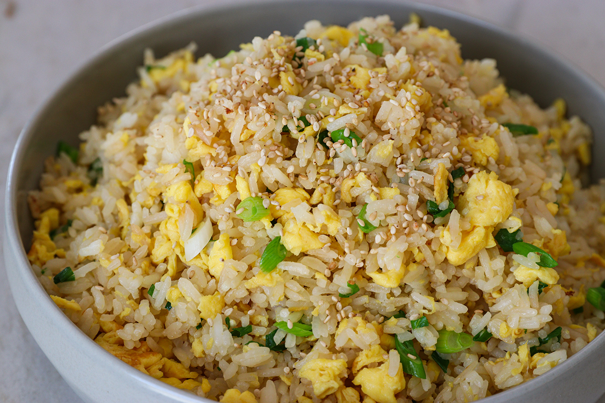

Reverse Egg Fried Rice Recipe

How to make egg fried rice, but reversed!
This is the easiest authentic chinese egg fried rice recipe with a twist.
Ingredients
- MSG
- salt
- oil
- spring onions, chopped
- 2 eggs per cup of rice, beaten
- rice, chilled
Steps
- heat wok with medium heat
- heat oil until slightly smokey
- add MSG into wok, stir fry until satisfied
- add eggs, stir fry until eggs are slightly set but still moist
- add rice and salt to taste
- add spring onions, stir fry until fragrant